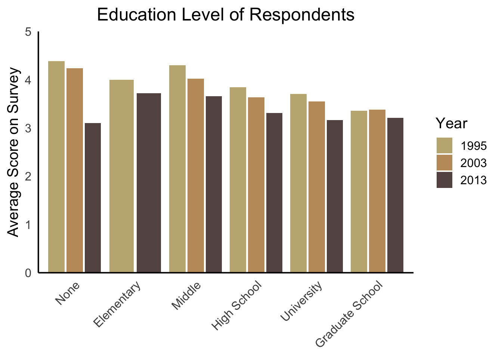

Education Is Correlated to Positive Views on Immigration in Hungary
Education Level and Immigration
Bern DySart 1, 
bd0482a@american.edu
1 School of International Service, American University
Introduction
In international studies a growing interest is in individual views on immigration and what could possibly influence these views. In this brief research of the data collected from the International Social Survey Programme conducted three different survey waves from 1995-2013 on national identity. In their data, they also gathered the educational level of the individual and their views on immigration. The question now is whether the level of education that someone has determines their views on immigration.
Before performing any anaylsis and strictly thinking from experience in this area of research, it would be reasonable to assume that the higher degree of education, the more positive view of immigration the individual will have on the global scale. This research intends to apply this thinking to the Hungarian case.
Methods
The International Social Survey Programme (ISSP), is a cross-national collaboration program that conducts annual surveys on social science topics. The survey data was collected through in-person interviews. This survey was replicated three different times in 1995, 2003, and 2013 with the same questions. Hungary was one of the few countries that participated in all three iterations of the survey. Across all three waves, 3,028 individuals were interviewed. One of the demographic questions asked what level of education that the respondent. The following is a quick view of that data in Hungary.

This look at the educational level of respondents gives a reference point of the majority of individuals that were surveyed. For all three waves, the frequency bar for all three years in Middle School and High School. By 2013, there were more respondents who had completed graduate school. In thinking about this baseline the graph provides, the next question to be investigated is correlation to views on immigration.
Analysis
Some of the questions in the survey asked about immigrants and views of immigrants within the country. One of those questions asks whether immigrants increase crime rates. The answers range from strongly agree to strongly disagree. The table below compiles the average score for each education level in Hungary. The lowest point value is one which is equivalent to the answer strongly disagree and the highest point value is five which is equivalent to the answer of strongly agree.
| Degree | W1 | AvgScore1 | W2 | AvgScore2 | W3 | AvgScore3 |
|---|---|---|---|---|---|---|
| None | 1995 | 4.4 | 2003 | 4.2 | 2013 | 3.1 |
| Elementary | 1995 | 4.0 | NA | NA | 2013 | 3.7 |
| Middle | 1995 | 4.3 | 2003 | 4.0 | 2013 | 3.7 |
| Secondary | 1995 | 3.8 | 2003 | 3.6 | 2013 | 3.3 |
| University | 1995 | 3.7 | 2003 | 3.6 | 2013 | 3.2 |
| Graduate | 1995 | 3.4 | 2003 | 3.4 | 2013 | 3.2 |
Looking at the first wave of the survey, respondents with no formal education, middle and secondary education had an average answer of around 4. This average cooresponds to the answer of Agree when asked about whether immigrants increase crime rates. However, those with higher education levels had average scores of 3 which is associated with the answer of Neither Agree nor Disagree when it comes to the views on immigration and crime rates. Over second two waves, there is a decrease in average scores for those below University education levels and for all levels with the final iteration of the survey.
Results
Following this examination of average scores, a regression analysis was performed to view possible correlation between educational degree and the response to the survey question about immmigrants increasing crime. In addition, age, sex, years of education, and work hours were also examined to see if that had any effect as well.
| Immigrant Crime Rate Response | |||
| m1 | m2 | m3 | |
|---|---|---|---|
| DEGREE | -0.164* | -0.070* | -0.097 |
| AGE | 0.007* | 0.007 | 0.004 |
| SEX | -0.048 | -0.062 | -0.096 |
| EDUCYRS | -0.044* | -0.053 | |
| WRKHRS | -0.002 | ||
| Num.Obs. | 2920 | 2918 | 1240 |
| * p < 0.05 | |||
The regression table shows that there is correlation between degree and response rate. Model one only examines the variables of degree, age, and sex. For the results on degree and age, these results were found to be statistically significant. For every one point increase in degree, there was a 0.164 drop in agreement with the idea that immigrants raise crime. Age also is statistically siginiciant and for every one point increase in age, there is a 0.007 increase in agreement with the statement which is interesting. Model two examines on more variable of years of schooling rather than degree. In this model both the degree variable and educational years are both statistically significant. Model 3 has predominantly negative coefficients but none are significant

In looking at the data, it appears that there is a relationship between education and views on immigration. Those with higher educational degrees or more years of education would be less likely to agree that immigrants increase crime rates. However this data is only for the country of Hungary so there is more research to be done on the background that would contribute to this kind of thinking. The differences between higher degrees and lower degrees are very small and that is interesting. The overall results do prove the hypothesis that the higher the education, the more positive the views on immigrants and immigration.
References
- ISSP Research Group (2020). International Social Survey Programme: National Identity I-III - ISSP 1995-2003-2013. GESIS Data Archive, Cologne. ZA5960 Data file Version 1.0.0, https://doi.org/10.4232/1.13471.